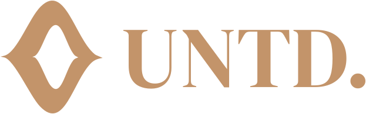
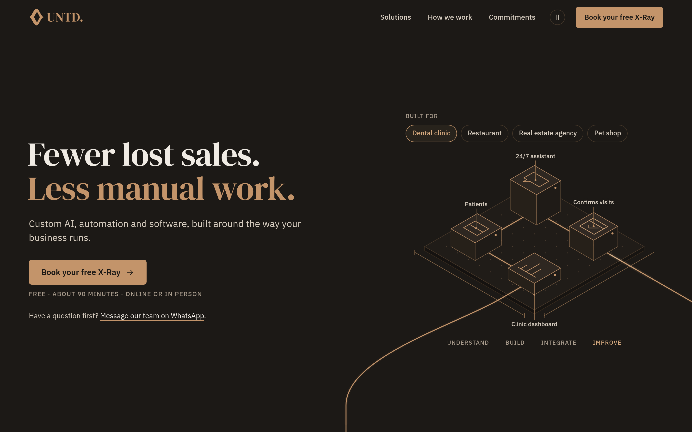
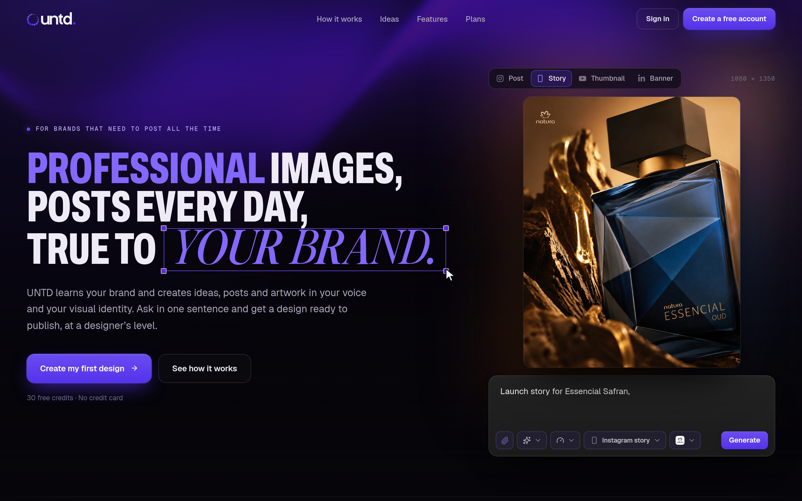
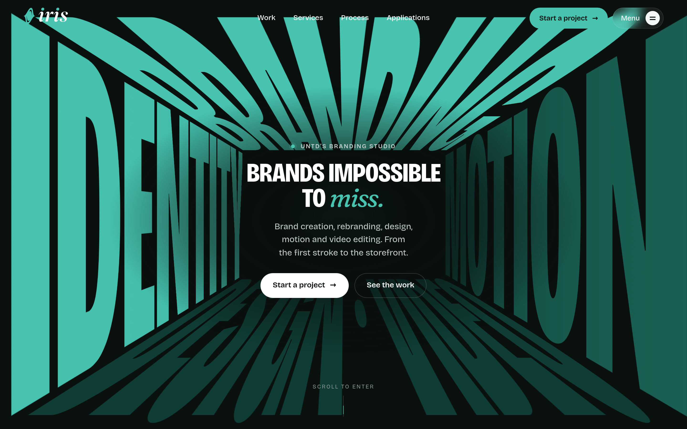
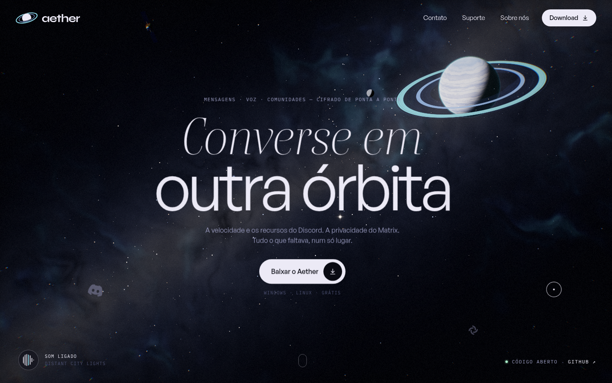
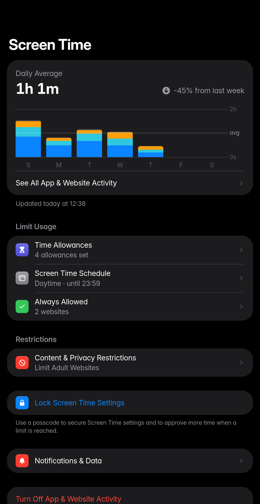

Co-founder and CEO of UNTD.
I make software people use: AI for businesses, and open source apps for Linux and the browser.

the companyCustom AI, automation and software, built around the way a business already runs. Three brands, one team.

UNTD.
AI assistants, automations and systems for your operation
untdcorp.org

UNTD Studio
On-brand images and posts, from one sentence
untdstudio.com

Iris
Brand identity, design, motion and video
untd-iris.vercel.app
Communities, direct messages and drop-in voice on Matrix, in a layout Discord users already know.
Linux·Windows·v0.1.13·AGPL-3.0
Built on Element·136 merged PRs in 2026

Rafael’s laptop wants to connect to your desktop. Allow them to see your screen, hear audio, and use their permitted input devices for this connection?

// a new process in its own namespaces pid_t child_pid = clone(child_fn, stack_top, CLONE_NEWUTS | CLONE_NEWPID | CLONE_NEWNS | CLONE_NEWUSER | SIGCHLD, NULL);